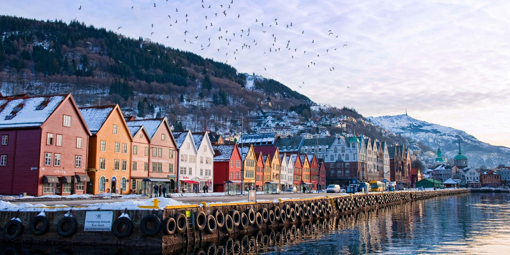

Din guide til alle ting i Bergen
Bergen som Europeisk Kulturby og Verdensarvby gir deg opplevelser og kultur i fremste linje. Som innfallsport til de norske fjordene gir Bergensregionen deg den ideelle kombinasjon av natur, kultur og interessante byopplevelser. Uansett årstid. Bergen er en internasjonal by full av historie og tradisjon. En stor by med en småbysjarm og atmosfære. Bergen liker besøkende. Og Bergen er verdt et besøk. Velkommen!